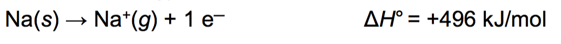
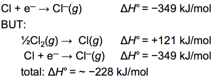
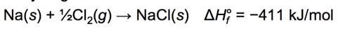

Week 6 - Day 1
Navigate using audio
Announcements
- Audio 0:00:10.820314
Where we left off
- Audio 0:01:22.152319
- What period 3 element has the following ionization energies (all in kJ/mol)?
- IE1 = 1012 IE2 = 1900 IE3= 2910 IE4= 4960 IE5= 6270 IE6 = 22,200
- A) Si
- B) S
- C) P
- D) Cl
- E) Mg
- Solution: Look for the biggest jump in ionization energy. That will tell you where it has a stable configuration (eight electrons). Since the sixth ionization energy is the highest, we can conclude that this is where we reach a stable configuration. Since we are told that our element is on the third period (row), we know that every time we remove an electron, we are going to the left across the periodic table, so we are moving towards neon. If you start at neon and count five spaces to the right, you’ll land on P. Another explanation here
- IE1 = 1012 IE2 = 1900 IE3= 2910 IE4= 4960 IE5= 6270 IE6 = 22,200
- Answer is C
Clicker 1
- Which of the following correctly illustrates the valence electron configuration of sulfur (S)?
- Audio 0:04:19.132251
- Looking at the periodic table you can see that the electron configuration is [Ne] 3s^2 3p^4
- Audio 0:04:44.233596
Clicker 2
- Place the following in order of decreasing IE_1.
- Cs, Mg, Ar
- Ar > Mg > Cs
- Audio 0:06:27.831790
- Ionization energy increases toward the top right of the periodic table.
- You can instantly see this and know it has to be Ar first
- Cs, Mg, Ar
Periodic Trend: Electron Affinities (EA) for Main-Group Elements
- Audio 0:07:24.054226
- Electron Affinity:
- It is the energy associated with the addition of an electron to the valence shell of an atom that is in the gas phase.
- M(g)+1e− →M1−(g)+EA
- It is the energy associated with the addition of an electron to the valence shell of an atom that is in the gas phase.
- It is defined as exothermic (−) the release of energy. But
may actually be endothermic (+) taking energy.
- Some alkali earth metals’ and all noble gases’ electron affinities are endothermic.
- The more energy that is released, the larger the electron affinity.
- The more negative the number, the larger the EA.
Periodic Trend: Electron Affinities (EA)
- Audio 0:08:45.799510
- General Trend for Main-Group Elements
- EA increases across a period.
- EA becomes more negative from left to right.
- EA increases across a period.
- Halogens have the highest EA for any period
Periodic Trend: Electron Affinities (EA) for Main-Group Elements
- Audio 0:10:58.796812
- Summarizing Electron Affinity for Main-Group Elements
- Most groups (columns) of the periodic table do not exhibit any definite trend in electron affinity.
- Among the group 1A metals, however, electron affinity becomes more positive as we move down the column (adding an electron becomes less exothermic).
- Alkali metals (group 1A) decrease electron affinity down the column.
- Generally irregular increase in EA from second period to third period
- Group 5A generally has lower EA than expected because extra electron must pair up.
- Groups 2A and 8A generally have very low EA because added electron goes into higher energy level or sublevel.
- Electron affinity generally becomes more negative (adding an electron becomes more exothermic) as we move to the right across a period (row) in the periodic table.
Characteristics of Metals versus Nonmetals
- Audio 0:12:24.155206
| Metals | Nonmetals |
|---|---|
| malleable and ductile | brittle in solid State |
| shiny | dull |
| conduct heat and electricity | insulator |
| basic | acidic |
| form cations | form anions |
| lose electrons in reactions | gain electrons in reactions |
Periodic Trend: Metallic Character
- Audio 0:15:52.518767
Periodic Trend: Metallic Character
- Metallic character is how closely an element’s properties match the ideal properties of a metal
- More malleable and ductile, better conductor, and easier to ionize
- Metallic character decreases left to right across a period the right
- Metallic character increases down the column.
- Nonmetals found at the top of the middle main group elements and metals found at the bottom
- Audio 0:16:25.235247 Metallic Elements:
- Ionization energy decreases down the column.
- Very low ionization energies + Good reducing agents; easy to oxidize + Very reactive; not found uncombined in nature + React with nonmetals to form salts + Compounds generally soluble in water; therefore metal ions are found in seawater.
- Electron affinity decreases down the column.
- metals generally have smaller first ionization energies and nonmetals generally have larger electron affinities.
- Audio 0:18:19.520679
- Metallic Elements:
- Quantum-mechanics predicts that the atom’s metallic character should
- increase down a column because the valence electrons are not held as strongly;
- decrease across a period because the valence electrons are held more strongly and the electron affinity increases.
- Atomic radius increases down the column.
- Melting point decreases down the column.
- MP for metals are generally low
- Density increases down the column.
- Except K
Chapter 5 - Molecules and Compounds
- Audio 0:19:47.042558
Elements to Molecules
- Audio 0:20:15.784877
- When two or more elements combine,a molecule can be formed.
- Elements can be the same.
- The molecular compound of oxygen, O2
- Elements can be different.
- The molecular compound of water, H2O
- Elements can be the same.
- Molecules are compounds.
- The great diversity of substances that we find in nature is a direct result of the ability of elements to form many different compounds.
Hydrogen, Oxygen, and Water
- Audio 0:21:35.856576
- The dramatic difference between the elements hydrogen and oxygen and the compound water is typical of the differences between elements and the compounds that they form.
- When two or more elements combine to form a compound, an entirely new substance results.
Law of Definite Proportion: Formation of Molecules
- A hydrogen–oxygen mixture can have any proportions of hydrogen and oxygen gas.
- Water(H2O) has a definite proportion of hydrogen to oxygen.
- A water molecule always is composed of two hydrogen
atoms to every one oxygen atom.
- A ratio of 2 hydrogen atoms : 1 oxygen atom
- A ratio of 2 hydrogen atoms : 1 oxygen atom
- A water molecule always is composed of two hydrogen
atoms to every one oxygen atom.
Chemical Bonds
- Audio 0:23:56.779753
- compounds are made of atoms held together by chemical bonds
- bonds are forces of attraction between atoms
- the attraction is electrostatic: between protons and electrons
Chemical Bonds
- Audio 0:25:19.627791
- the length of a bond is determined by the balance of various electrostatic forces
- attraction between electrons and nuclei
- repulsion between nuclei
- repulsion between electrons
Bond Types
- Audio 0:27:02.736420
- two general types of bonding between atoms found in compounds, ionic and covalent
- ionic bonds result when electrons have been transferred between atoms, resulting in oppositely charged ions that attract each other
- generally metal atoms bonded to nonmetal atoms
- covalent bonds result when two atoms share some of their electrons
- generally found when nonmetal atoms bonded together
- Audio 0:29:06.260194

- We draw a dash to denote a covalent bond between atoms in the structural model
- ball and stick starts to show us how it really looks in 3d space
- space-filling model shows it more accurately in terms of how they bond
-
- Audio 0:31:23.554938
- Audio 0:32:33.081289
- A molecular formula shows the exact number of atoms of each element in the smallest unit of a substance
- An empirical formula shows the simplest whole-number ratio of the atoms in a substance
| molecular | principal |
|---|---|
| H2O | H2O |
| C6H12O6 | CH2O |
| O3 | O |
| N2H4 | NH2 |
Molecular Elements
- Audio 0:34:57.015297
- Certain elements occur as 2 atom molecules
- Other elements occur as polyatomic molecules
- P4, S8, Se8
Ionic Compounds
- Audio 0:36:11.710564
- ionic compounds consist of a combination of cations and anions
- the formula is always the same as the empirical formula
- the sum of the charges on the cation(s) and anion(s) in each formula unit must equal zero
- The Ionic compound NaCl
- Audio 0:37:35.867163
- metals + nonmetals
- no individual molecule units, instead have a 3-dimensional array of cations and anions made of formula units
- many contain polyatomic ions
- several atoms attached together in one ion

Formulae of Ionic Compounds
- Audio 0:38:32.534553
-
- Aluminum likes to lose three electrons
- Al^3+
- Oxygen likes to gain two electrons
- O^2-
- Aluminum likes to lose three electrons
Clicker 3
- Audio 0:42:57.146045
- What is the correct formula for the binary compound formed from sodium and nitrogen
- Na_3N
- You have to put sodium first
- Na_3N
Octet Rule: A Guideline for Molecule Formation
- Audio 0:43:41.584886
- Atoms prefer to have a filled valence shell meaning 8 valence electrons
- Also expressed as: atoms prefer to have the same valence electron configuration as nearest noble gas
Lewis Theory Predictions for Ionic Bonding
- Audio 0:44:41.987239
- Lewis theory predicts the number of electrons a metal atom should lose or a nonmetal atom should gain in order to attain a stable electron arrangement. +The octet rule
- Octet rule (guideline) allows us to predict the +formulas of ionic compounds that result; +relative strengths of the resulting ionic bonds based on Coulomb’s law.
Octet Rule: A Guideline for Molecule Formation
- Audio 0:45:49.850342
- Exceptions to the octet rule:
- H, Li, Be, and B attain an electron configuration like that of He.
- He can have ONLY two valence electrons, a duet.
- Li loses its one valence electron.
- H shares orgainsoneelectron. +Though it commonly loses its one electron to become H+
- BelosestwoelectronstobecomeBe2+. +Though it commonly shares its two electrons in covalent bonds, resulting in four valence electrons
- BlosesthreeelectronstobecomeB3+. +Though it commonly shares its three electrons in covalent bonds, resulting in six valence electrons
Energetics of Ionic Bond Formation: Using NaCl as an Example
- Audio 0:47:21.944874 The ionization energy of the metal is endothermic.
- 
- The electron affinity of the nonmetal is exothermic.
- 
- Generally, the ionization energy of the metal is larger than the electron affinity of the nonmetal; therefore, the formation of the ionic compound should be endothermic.
- But the heat of formation of most ionic compounds is exothermic and generally large.
- 
Vocab
| Term | Definition |
|---|---|
| electron affinity | energy associated with the addition of an electron to the valence shell of an atom in the gas phase |
| metal properties | malleable, ductile, shiny, conduct heat and electricity, form cations, lose electrons in reactions |
| nonmetal properties | brittle, dull, insulating, acidic, form anions, gain electrons in reactions |
| oxidization | losing electrons in reactions |
| reduction | gaining electrons in reactions |
| metallic character | how closely an element’s properties match the ideal properties of a metal |
| decreases left to right and increases down | metallic character _ the period table (increases or decreases and left to right or up or down) |
| ionic bonds | result when electrons have been transferred between atoms, resulting in oppositely charged ions that attract each other |
| covalent bonds | when two atoms share some of their electrons |
| molecular formula | shows the exact number of atoms of each element in the smallest unit of a substance |
| empirical formula | shows the simplest whole-number ratio of the atoms in a substance |
| polyatomic ions | several atoms attached together in one ion |
| octet rule | says atoms gain or lose electrons so that they have a nobel gas configuration |
| duet | atom with only two valence electrons |